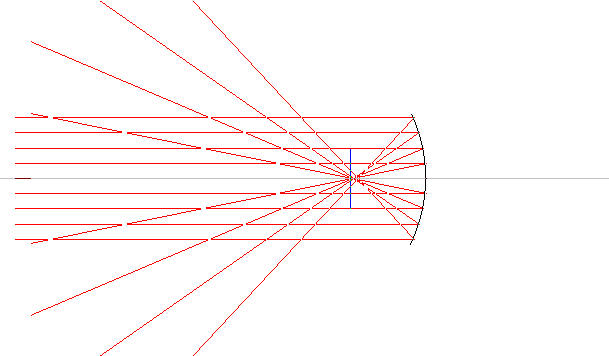

Herover sendes et parallelt strålebundt mod et sfærisk hulspejl. Spejlets brændpunkt (R/2) er markeret med en blå streg. Spejlet er ikke tyndt, så man ser tydeligt den sfæriske aberration. Dvs. stråler som rammer forskellige ringe af spejlet har forskellig brændvidde.
Til gengæld har spejlet igen kromatisk aberration, da spejlingsloven er uafhængig af bølgelængden.
PS: Galilei døde samme år som Newton blev født! Det var Galilei, som konstruerede den første kikkert, hvori han bl.a. så Jupiter og dens måner. Newton konstruerede større kikkerter end Galilei, men disse kikkerter slørede billedet pga. farvespredning og efter mange anstrengelser opgav Newton linsekikkerten og konstruerede spejlteleskopet.